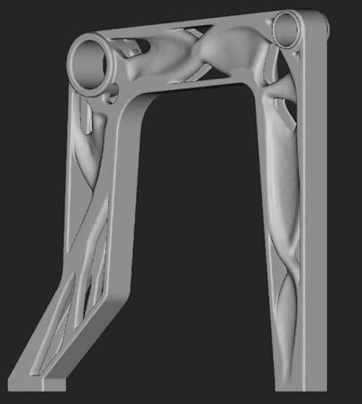
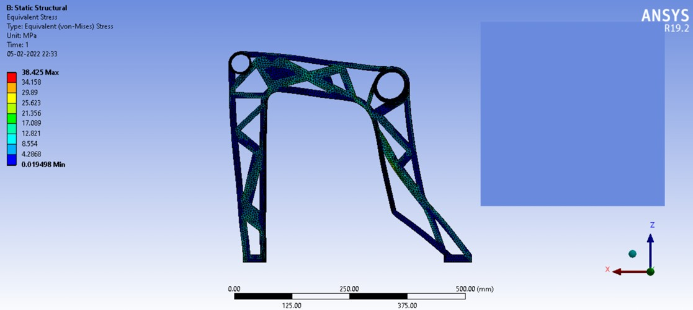
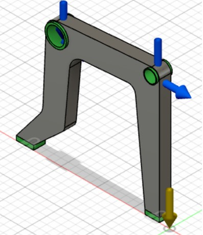
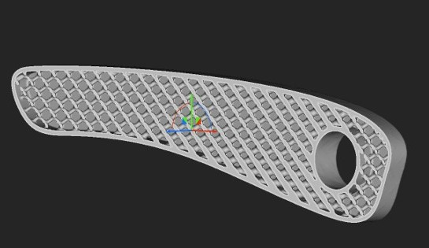
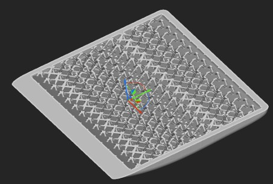

Additive Manufacturing
Design Optimisation and Additive Manufacturing of an Aircraft Seat
Lightweight Structural Design for Aerospace Applications
A design optimisation study focused on reducing aircraft-seat mass through generative design, lattice structures, and additive manufacturing while preserving the strength and functional requirements of the seat assembly.
Tools & Methods
The Lightweighting Challenge
Aircraft seating must meet demanding structural and safety constraints while remaining as light as possible. This work investigates how computational design and additive manufacturing can replace conventional, material-intensive geometries with efficient load-bearing structures.

Structural Simulation and Design Optimization
Finite element analysis was used to evaluate the seat structure under representative loading conditions and identify regions where material could be removed or redistributed. The resulting design process connects performance requirements to manufacturable geometry.




Lattice Structures and Additive Manufacturing
Lattice structures enable material to be placed where it contributes most to stiffness and strength. Their geometric freedom makes them particularly suitable for additive manufacturing, where internal architectures can be produced without the tooling limitations of conventional processes.
Engineering Impact
The study demonstrates a workflow for translating aerospace load requirements into lighter, digitally manufactured seat components. The approach can support future aircraft interiors, brackets, supports, and other parts where mass reduction directly improves operating efficiency.
Read the full research or download the publication.
Access the aircraft-seat design optimisation study and supporting research.